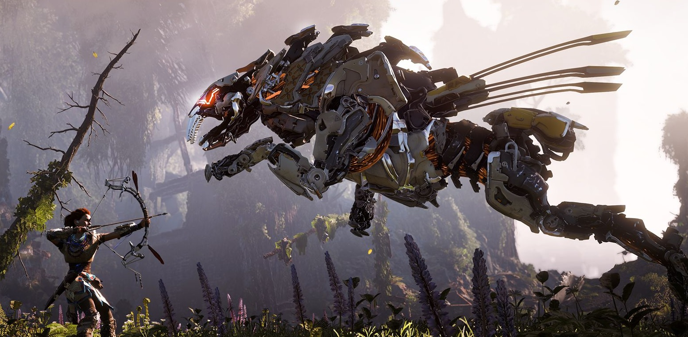
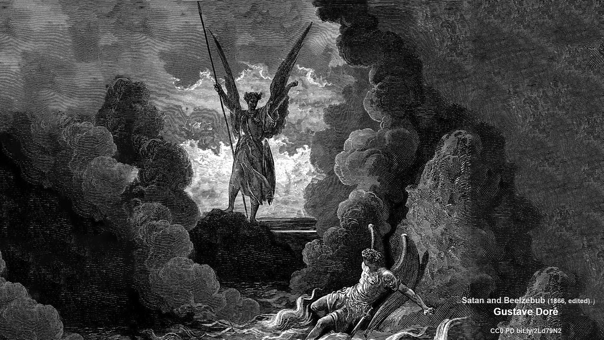

How a Complete Lack of Innovation Led to One of the Best Game Franchises of the Past Decade
Horizon: Zero Dawn is one of the most critically and commercially successful video games of recent years, singlehandedly ending a decades long trend requiring creativity and innovation for games to leave their mark on history

Dealing With the Devil
A deep dive into the ways rapper and pop star Lil Nas X has used social media and controversy to orchestrate his meteoric rise to stardom and ensure his name has remained in the news cycle years later
Video PlaceHolder
This is the description for my video, it will end up being extremely interesting and thought provoking
My Fourth Slide Placeholder
This is my fourth slide, not sure what I will put here yet